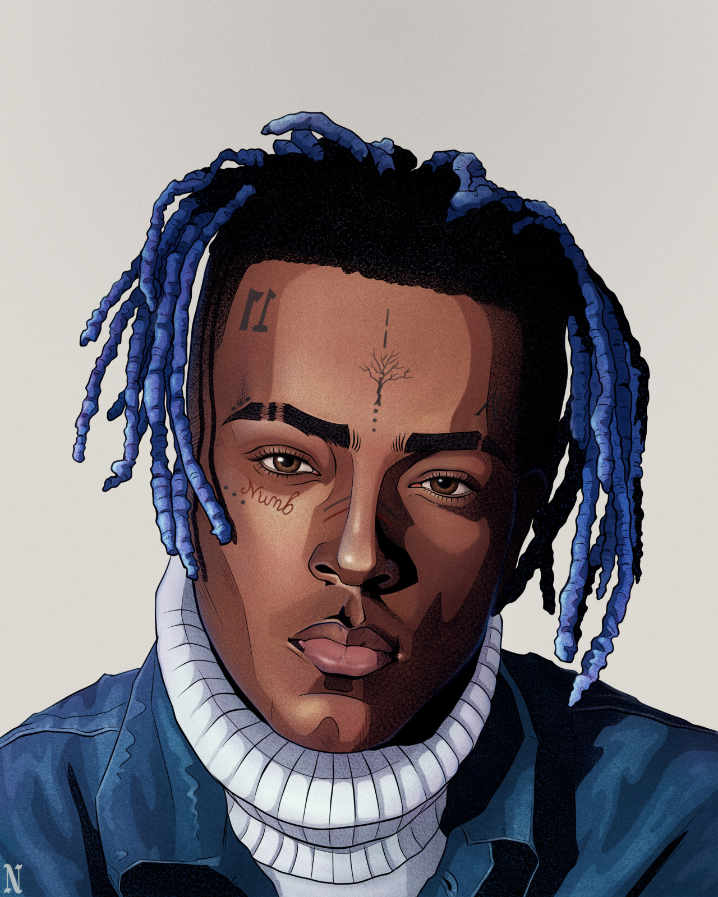

"What's real will prosper"
|  | First Name: | Jahseh |
| Middle Name: | Dwayne Ricardo | |
| Last Name: | Onfroy | |
| Stage Name: | X, XXXTENTACION, XXX, Jah, Triple X, young digger dick | |
| Born: | January 23, 1998 / Plantation, Florida, U.S. | |
| Died: | June 18, 2018 (aged 20)/ Deerfield Beach, Florida, U.S. | |
| Cause of death: | Murder (multiple gunshot wounds to the neck) | |
| Year Active: | 2015–2018 | |
| Nationality: | American | |
| Occupation: | Rapper, singer, songwriter | |
| Genre: | SoundCloud rap, emo rap, hip hop, lo-fi | |
| Website: | xxxtentacion.com |
Jahseh Dwayne Ricardo Onfroy was born on January 23, 1998, in Plantation, Florida, to Jamaican parents, Dwayne Ricardo Onfroy and Cleopatra Eretha Dreena Bernard. His father named him for the Bob Marley song "So Jah Seh", which interpolates Ezekiel 34. Both Onfroy's father and grandfather were Rastafarians. Onfroy was born with a ventricular septal defect, commonly known as a "hole in the heart". Due to his condition, he never grew taller than 5 feet 6 inches. Onfroy stated he also had Egyptian or Syrian, Indian, and possibly Italian ancestry in an interview on The Beat in 2017.
Onfroy was mainly raised by his grandmother Collette Jones —due to his mother's personal problems— in Pompano Beach, Florida, and Lauderhill, Florida. When Onfroy was six years old, he allegedly tried to stab a man attempting to attack his mother and was eventually put into a youth program before living with his grandmother. A source close to the Onfroy family denied that the alleged stabbing incident occurred, and it could not be corroborated by police reports, since Onfroy was a minor.[40] When Onfroy was a child, he discovered his uncle's deceased body after the man committed suicide by hanging. Onfroy referenced his trauma from the incident in multiple songs. In 2017, Onfroy alluded that he had been sexually abused by an unnamed adult when he was a child. According to Onfroy's mother, he was routinely beaten by his father as a child; she claimed that Onfroy's father tried to hit her in front of Onfroy on several occasions. In early 2008, when Onfroy was ten, his father was jailed for nine years in Arizona on RICO charges after the Drug Enforcement Administration organized a sting operation. Onfroy's father was released from BOP custody on October 30, 2015, and deported to Jamaica in late 2016.
Onfroy's interest in music initially started after his aunt persuaded him to begin attending school choir and later church choir. He was soon kicked out of the school choir after attacking another student.[45] Onfroy attended Margate Middle School, from which he was later expelled after a series of physical altercations. He was subsequently enrolled into Sheridan House Family Ministries by his mother for over six months. Onfroy began to listen to rap, nu metal, and hard rock during his time at Sheridan House Family Ministries, which led to him learning how to play the piano and guitar.
Onfroy attended Piper High School until he dropped out in the tenth grade. He described himself as a "misfit" during that time, citing how quiet he was despite being popular and regularly involved in physical confrontations. As a child, Onfroy was diagnosed with bipolar disorder.Onfroy was not the athletic type and said that he was insecure and depressed during his time in high school.
Onfroy's career as a music artist began in June 2013 after the release of his song "News/Flock". According to interviews, while in juvenile detention for gun possession charges, he met Stokeley Goulbourne, another artist known as Ski Mask the Slump God. Some sources interviewed for a 2020 biography dispute this narrative, and say that the pair met at high school. Onfroy and Goulbourne became good friends and began freestyling.XXXTentacion's music was driven on themes revolving around depression and alienation,[364] becoming known for his "depressing, and at times devastating"[26] music that brought attention to mental health.[365] He employed styles and techniques that were unconventional in hip hop during his career, such as distortion[366] and heavy guitar-backed instrumentals drawing inspiration from third-wave emo.[367]
Christopher Weingarten of Rolling Stone opined that XXXTentacion's success as "a zeitgeist-grabbing, industry-defying, boundary-destroying phenomenon" is "overshadowed" by his alleged violence towards his ex-girlfriend, but contended that despite media attempts to suppress him, XXXTentacion's "impact on music will be felt for years to come" and his recordings have "helped signal a new era of post-streaming, post-genre teenagers". XXXTentacion left behind what Rolling Stone called "a huge musical footprint" due to his impact on his young fanbase and his popularity during his career. Given his immense influence only to die young, the article compared his cultural impact with that of Ritchie Valens and Darby Crash. Chris Willman of Variety described in a 2022 article that while XXXTentacion was a flawed individual, during his career he "nearly became rap's own Kurt Cobain", and mentioned that it was "heartbreaking" to see XXXTentaction killed just as he began to show signs of "warmth, self-awareness and a desire to help".
Highlighting his ambivalent public reception during his short career, Billboard wrote:
"The provocative and polarizing artist seemed to thrive on controversy as much as art, often blurring the lines between shocking reality and button-pushing creativity. XXX's short career was characterized by both in equal measure-making the Florida rapper a martyr to a legion of fans and a cautionary tale to so many others."
On June 18, 2019, exactly one year on from XXXTentacion's death, an official documentary on his life was announced; it featured footage of Onfroy from around April 2017 telling biographical details. On February 2, 2022, it was announced that the film, titled Look at Me, would be released on the Hulu streaming service on May 26, 2022.
XXXTentacion has RIAA-certified sales of 38 million units in the US and BPI-certified sales of over 7 million units in the UK. He is also one of the Top-20 all-time best selling artists in terms of digital singles, with a total of 49 million RIAA-certified digital sales[374] as of October 2020. In August 2021, XXXTentacion's single, "Sad!", was certified Diamond in the US.
Artists such as Billie Eilish and Juice Wrld have cited XXXTentacion as a musical influence.
XXXTentacion has been cited as an influence by a number of artists, including Billie Eilish, Juice Wrld, The Kid Laroi, Kendrick Lamar, Lil Nas X, Trippie Redd, and Kanye West.
As of August 2022, XXXTentacion's last Instagram post before his death holds the record of the 3rd most-liked Instagram post of all-time with 29.9 million likes.
According to YouGov polling as of August 2022, a plurality of Americans view XXXTentacion positively, with 41% of Americans who have heard of XXXTentacion holding a positive opinion, and 31% holding a negative opinion. 49% of respondents said they have heard of XXXTentacion. He is most famous and popular among Millennials and Generation Z, with 73% having heard of him and 49% of those holding a positive opinion. He is known by 45% of Generation X and 26% of Baby Boomers.
| Year | Song Album |
| 2017 | 17 |
| 2018 | ? |
| 2019 | Skins |
XXXTentacion's music explored a wide variety of genres, including emo, trap, lo-fi, indie rock, punk rock, nu metal, and hip hop. His influences included Kurt Cobain, whom he cited as his biggest inspiration, 2Pac, Cage the Elephant, Chingy, Coldplay, Eminem, The Fray, Chief Keef, Gorillaz, Hoobastank, Lana Del Rey,[158] Laura Mvula, The Notorious B.I.G., Papa Roach, Yoko Shimomura, Tech N9ne, Three Days Grace, The Weeknd, and Kanye West.
When speaking of his influencers, XXXTentacion said, "I'm really into multi-genre things that aren't just based around rapping itself. I'm more inspired by artists in other genres besides rap." XXXTentacion as an artist has been defined as versatile and his music has been described as having a "lo-fi" aesthetic, being diverse and experimental, drawing influence from heavy metal. His music also has the tendency to contain distorted bass and an "intentional lack of polish". Speaking about this, XXXTentacion said that the intentionally bad mixing on his tracks make it "genuine".
XXXTentacion generally changed his vocal style depending on the type of song he was performing on. His vocal style has been described as displaying "emotional vulnerability" on much more depressing tracks[172] and as replicating screaming on much more aggressive tracks.[173] His songwriting has been described as outlandish and shocking, often referring to "violence, sex, and drugs",[174] though on some projects such as The Fall and 17, Onfroy's songwriting was more emotional in comparison to his previous work, often referring to loneliness, depression, isolation, and anxiety.[175] He was known for his "depressing, and at times devastating" music that brought attention to mental health.
“I advise you to not hide your feelings, don’t pretend to be okay when you’re not okay, don’t pretend to be happy when you’re sad, it’ll only lead to your misery.”
"Your self respect is what matters. You cannot have a good life or have other people respect you for that matter if you don’t respect yourself."
"Whether you realize it or not, everyday you evolve and create a thought."
"The saddest thing about betrayal is that it never comes from enemies, it comes from those you trust the most."
"Depression and obsession don’t mix well"
"Life is a matter of perception. Everything is a riddle. You can simplify if you diversify your thoughts. "
| Year | Song Title |
| 2016 | Look at Me! |
| 2016 | Vice City |
| 2017 | I spoke to the devil in miami, he said everything would be fine |
| 2017 | Let's Pretend We're Numb |
| 2017 | Revenge |
| 2017 | Fuck Love (feat. Trippie Redd) |
| 2017 | Jocelyn Flores |
| 2017 | Everybody dies in their nightmares |
| 2018 | Sad! |
| 2018 | Moonlight |
| 2018 | Falling Down |
| 2018 | Bad! |